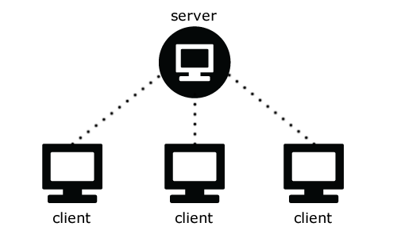
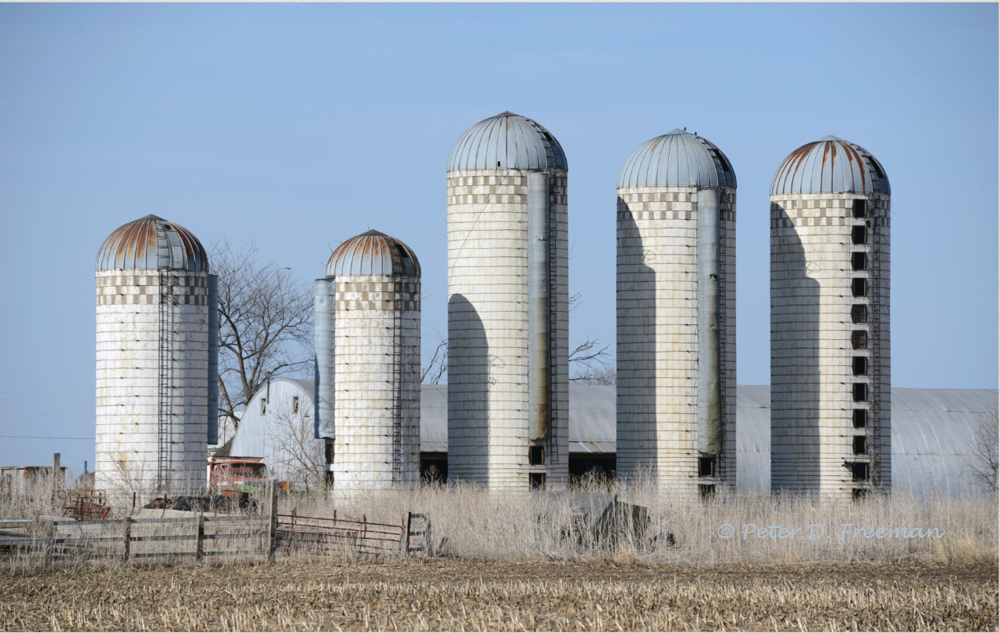
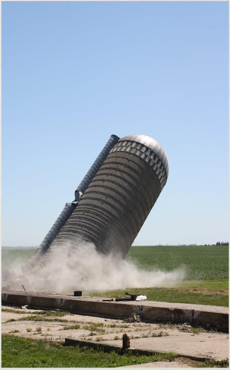
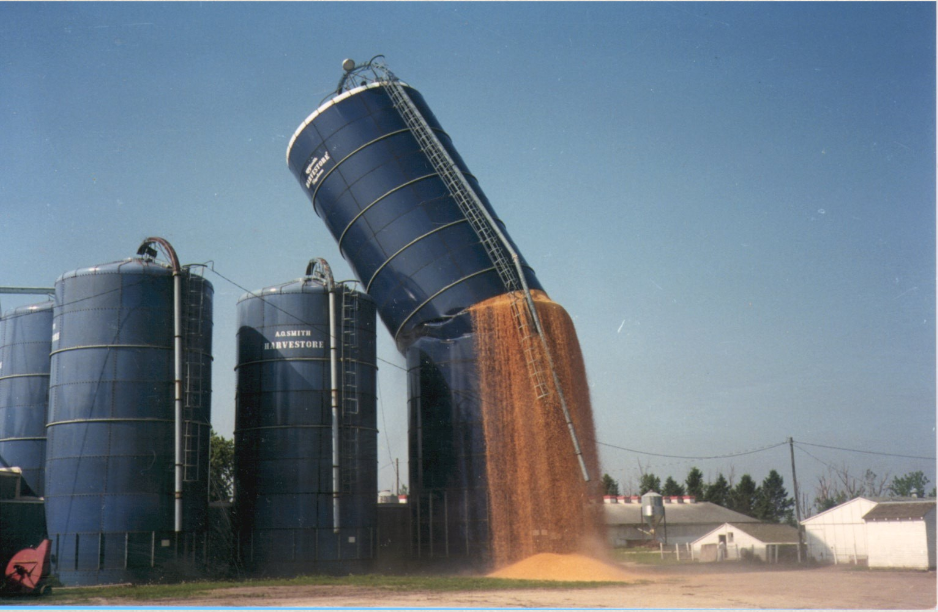
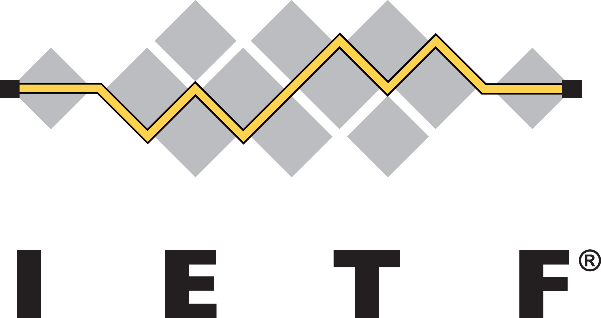

Internet Storage Sync
Michiel de Jong,
@michielbdejong
,
michiel@mozilla.com
The Internet we knew
General-purpose computers, inter-connected as equal peers.
The Internet we have

Pre-configured devices that sync with storage servers.
Storage silos!

WindowsPhone: OneDrive
Android: GoogleDrive
iPhone: iCloud
Storage silos!

Single point of failure.
Storage silos!

Your data in a silo :(
The Internet we want
Any device manufacturer, any storage provider.
How?
Standard protocols for Internet Storage Sync
or…
Polyglot sync clients in devices
IETF

Internet Storage Sync
W3C
Decentralized Sharing Community Group
Web browsers
Can browsers sync your data for you?
storage.sync
New storage.sync API for WebExtensions
Just store data from JavaScript
The browser syncs it
In Chrome: to Google storage
In Firefox (fresh plan, WiP): supporting multiple sync APIs
Sync all the things!
@michielbdejong / michiel@mozilla.com
English
中文（简体）
中文（繁體）
日本語
-->